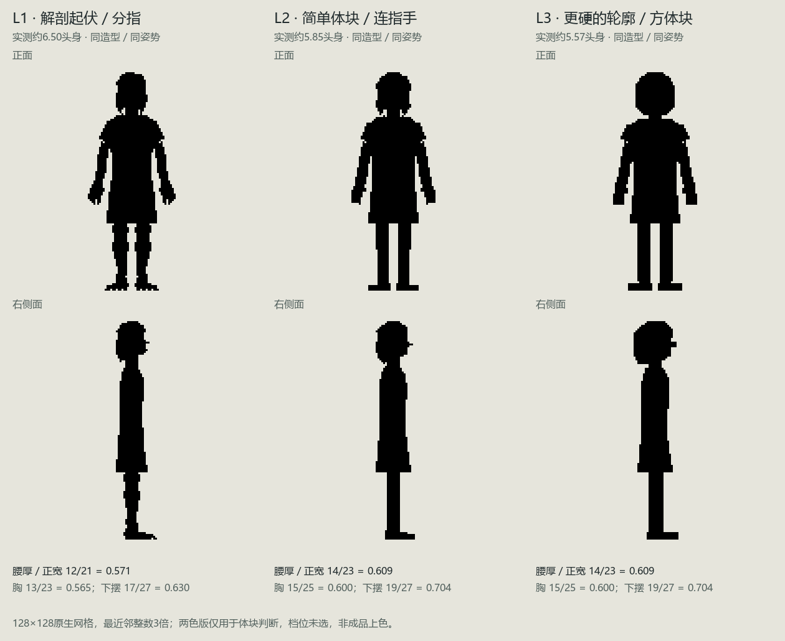
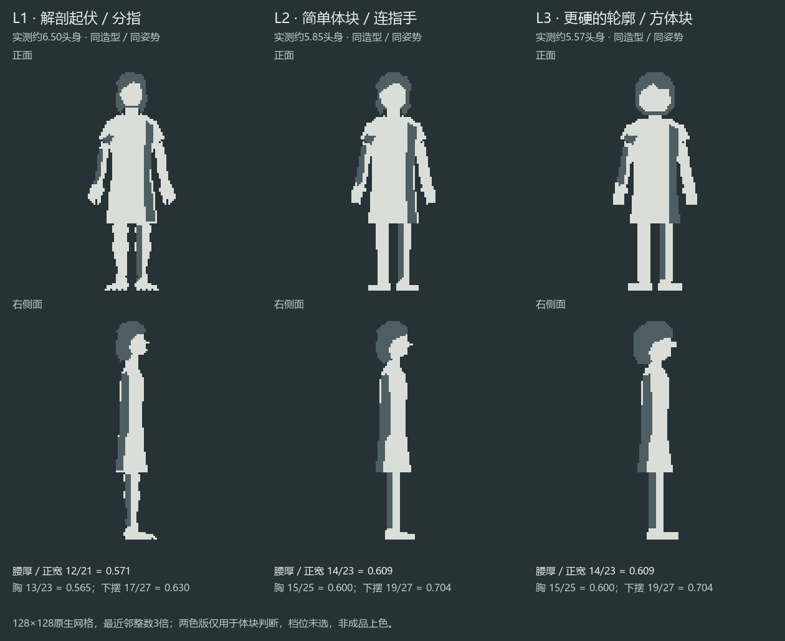
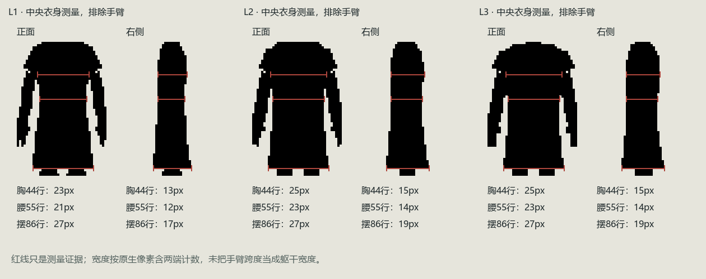
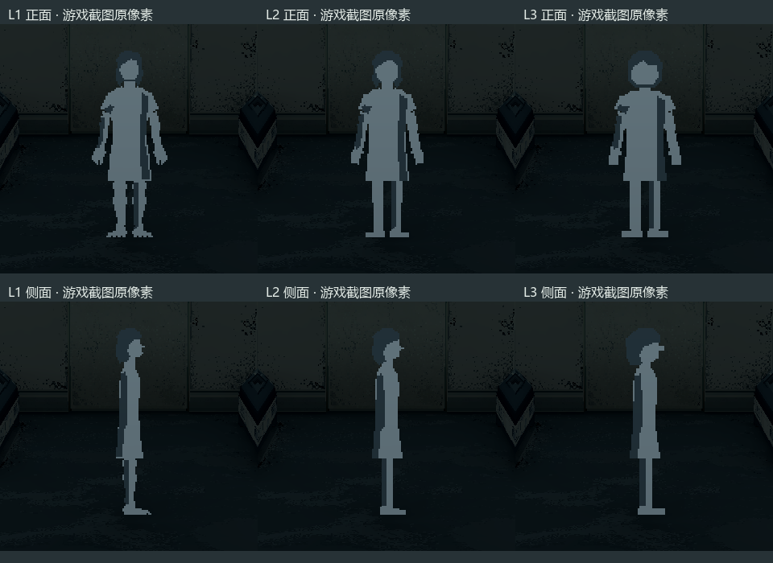
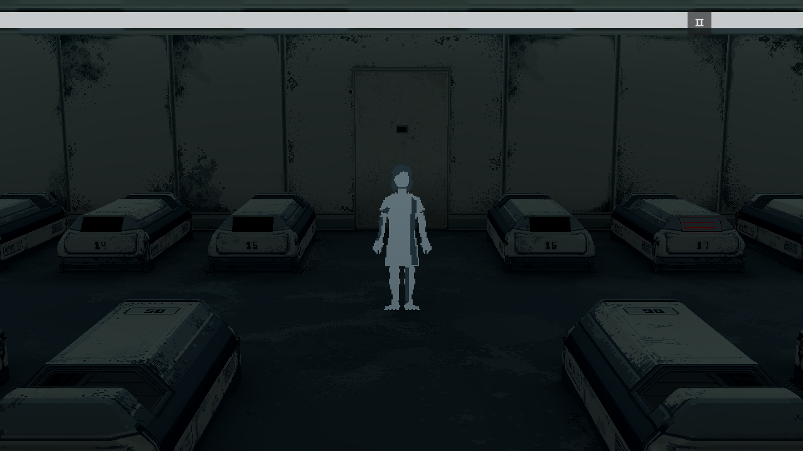
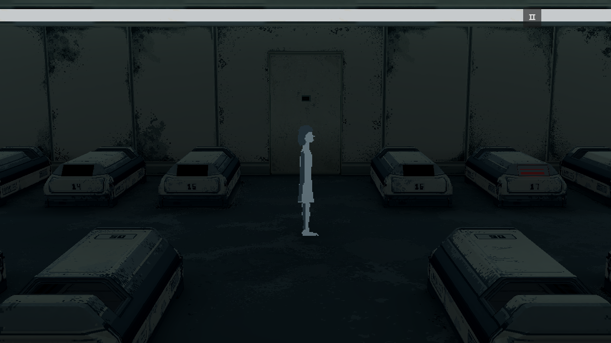
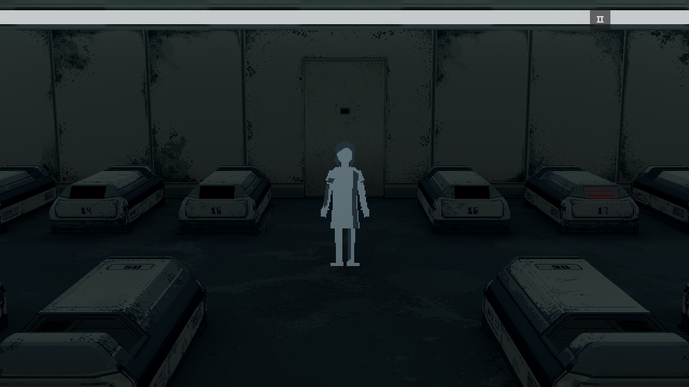
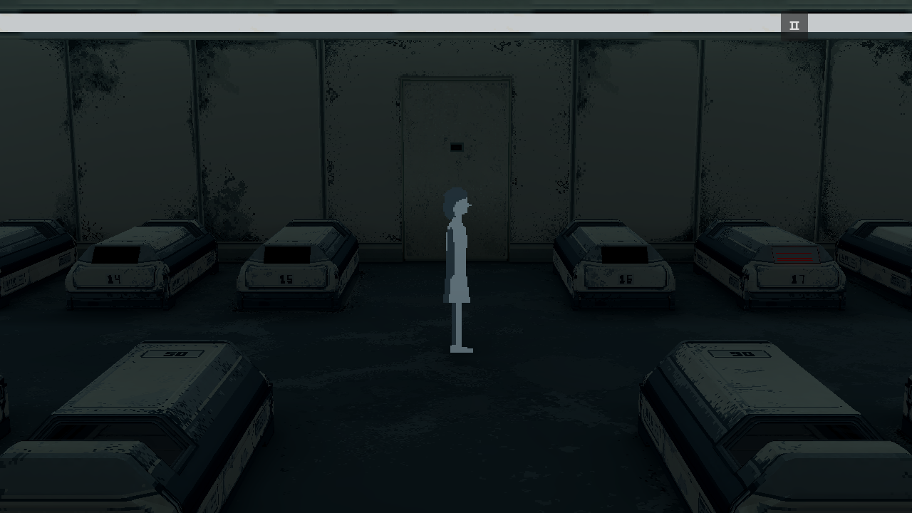
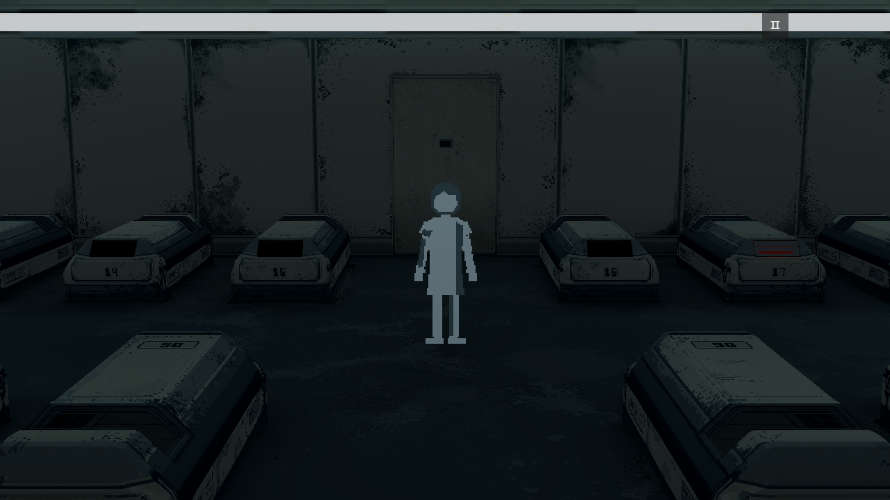

仅执行新版重设计简报第3节。同一个短发、短袖及膝休眠服、赤脚造型，统一站姿；不使用旧v4/v5导图，不调用PixelLab、Tripo或其他生成服务。
说明与实测表 · 可编辑Aseprite · 原生测量数据 · 交付检查
每张原生128×128，头顶y6／脚底exclusive y123，可见117px。上行为正面，下行为右侧面。以下仅整数3倍显示，未等高重采样。

三档一律只有两种灰色，没有材质纹理、五官或成品上色。L1多层皮肤过渡在本轮两色限制下不展开，只比较解剖起伏与分指轮廓。

测量衣身本体，排除手臂跨度；胸y44、腰y55、下摆y86，像素含两端计数。胸腰连续40–64行比例也逐行检查。红线只在证据图，不进入剪影素材。

独立审图场景继承已冻结Room1：墙r24、地r26、舱r28、门r32、灯B与暗玻璃。沿用实际镜头和纸片受光，六图同机位同身高，内部／输出1280×720；正式角色未改。
下图直接裁取截图原像素，没有放大或缩小；打开原图可1:1看。每格保留舱体与地面做尺寸背景。网页缩放／窗口不足时仍可能由浏览器整体缩小。






只用于选简化档位。未制作背面、最终上色、阶段二服装或新3D，未采用任何档位；正式占位、镜头与布局保持不变。